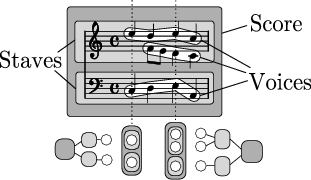

| [ << Concepts fondamentaux ] | [Racine][Table des matières][Index][ ? ] | [ Retouche de partition >> ] | ||
| [ < Contextes et graveurs ] | [ Plus haut: Contextes et graveurs ] | [ Création d’un contexte > ] | ||
3.3.1 Tout savoir sur les contextes
Imprimer de la musique impose d’ajouter un certain nombre d’éléments de notation. Par exemple, voici un fragment de partition, précédé du code qui l’engendre :
cis4 cis2. g4
![[image of music]](../4e/lily-08769236.png)
Si le code est assez austère, dans la partition ont été ajoutés un chiffre de mesure, des barres de mesure, des altérations et une clé. Pour une bonne raison : LilyPond interprète le code. Il le compulse dans l’ordre chronologique, de même qu’on lit une partition de gauche à droite ; et pendant ce traitement, le logiciel garde en mémoire les limites des mesures, ou encore quelles hauteurs de note demandent des altérations accidentelles. Ces informations se présentent à plusieurs niveaux : ainsi, une altération n’a d’effet que sur une seule portée, tandis qu’une barre de mesure doit être synchronisée sur toute l’étendue verticale de la partition.
LilyPond regroupe ces règles et ces fragments d’information dans des
Contextes. Certains contextes sont les voix (contexte Voice),
les portées (contexte Staff), ou la partition dans son ensemble
(contexte Score). Ils sont ordonnés hiérarchiquement : ainsi un
contexte Staff peut contenir plusieurs contextes
Voice, et un contexte Score peut contenir plusieurs
contextes Staff.

Chaque contexte est chargé de faire appliquer certaines règles de gravure,
de créer certains objets, et de prendre en compte les propriétés qui leur
sont associées. Ainsi, le contexte Voice peut faire intervenir une
altération accidentelle, puis le contexte Staff devra déterminer s’il
faudra imprimer ou non cette dernière dans la suite de la mesure.
Les barres de mesure, quant à elles, sont alignées verticalement grâce au
contexte Score par défaut.
En revanche, dans une musique polymétrique, par exemple mêlant une
portée à 3/4 et une autre à 4/4, les barres de mesures n’ont plus à être
alignées : il faut alors modifier les comportement par défaut des
contextes Score et Staff.
Dans une partition très simple, les contextes sont créés implicitement et peuvent être ignorés. Mais lorsqu’il s’agit de morceaux plus amples – entendons par là tout ce qui s’écrit sur plus d’une portée – il faut les créer explicitement pour être sûr d’obtenir toutes les portées nécessaires, et dans le bon ordre. Enfin, pour des morceaux impliquant une notation spéciale, modifier les contextes ou en créer de nouveaux devient extrêment utile.
En plus des contextes Score, Staff et Voice sont
disponibles d’autres contextes intermédiaires entre les niveaux
partition et portée, chargés de gérer certains regroupement, tels que
PianoStaff ou ChoirStaff. Vous disposez aussi d’autres
contextes de portée ou de voix alternatifs, ainsi que des contextes
spécifiques pour les paroles, les percussions, les tablatures
d’instruments frettés, la basse chiffrée, etc.
Le nom de chacun des contextes est formé d’un ou plusieurs mots aux
initiales en majuscule et directement accolés les uns aux autres sans
ponctuation, comme par exemple GregorianTranscriptionStaff.
Voir aussi
Manuel de notation : Tout savoir sur les contextes.
| [ << Concepts fondamentaux ] | [Racine][Table des matières][Index][ ? ] | [ Retouche de partition >> ] | ||
| [ < Contextes et graveurs ] | [ Plus haut: Contextes et graveurs ] | [ Création d’un contexte > ] | ||